Districts
District 1 is one of the wealthiest districts of Panem. Its primary industry is manufacturing luxury items, such as jewelry, for the Capitol. It has a generally favorable relationship with the Capitol, though it is still not excused from the annual Hunger Games. 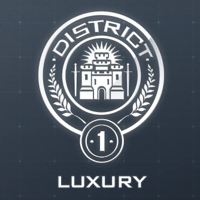
Publicly, District 2 is presented solely as the home of the nation's stone quarries and masonry workers, but it is also where many Peacekeepers are recruited, trained, and where weapons are manufactured for their use.
District 3 is one of the 13 districts of Panem. It's main industry is technology, and people manufacture televisions, computers, and other electronics. Most of its inhabitants work in factories and are very adept at engineering. 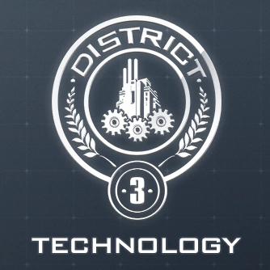
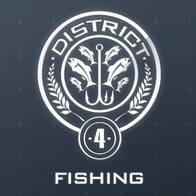 District 4's major industry is fishing, and children are apparently trained for jobs in this industry at a young age. Most of its inhabitants work in factories and are very adept at engineering. District 3 is known to be a rebellious district.
District 5 is one of the thirteen districts of Panem. Its main industry is power and electricity, and the district is responsible for generating the power of the entire nation. It is shown to have a huge hydroelectric dam used for this purpose. 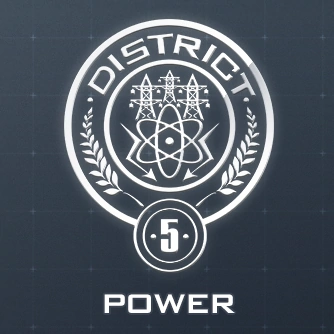
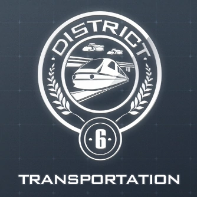 District 6's principal industry is transportation. It is hinted that morphling addiction may be an issue in the district. District 6 seems to be one of the more rebellious districts.
District 7 is one of the thirteen districts of Panem. Large swathes of the region are apparently covered with trees - as District 7 provides lumber and paper to the Capitol - and the citizens are known to be skilled with axes. 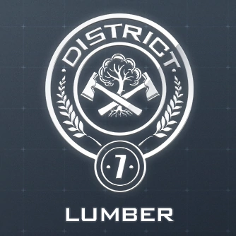
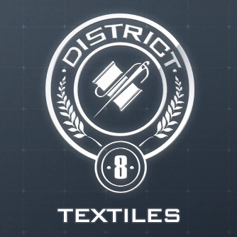 District 8's main industry is textile production, and they have at least one factory that is used for making Peacekeeper uniforms. District 8 playes one of the largest roles in the second rebellion, including starting the war itself.
District 9 is one of the thirteen districts of Panem. Its primary industry is grain production. District 9 is the least-mentioned district, and relatively little about it is known for certain. 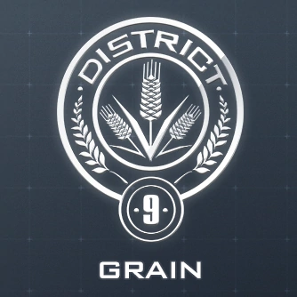
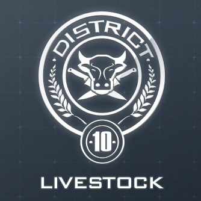 District 10's main industry is livestock. It provides meat to the Capitol. District 10 is located in the far southwest of the continent, roughly corresponding to Texas, New Mexico and Nevada, with some territory in northern Mexico itself.
District 11's main industry is agriculture. The land is covered with orchards, fields, and herds of dairy cattle. District 11 also seems to be one of the poorer districts; the citizens are not allowed to eat any of the crops 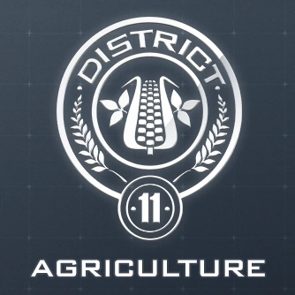
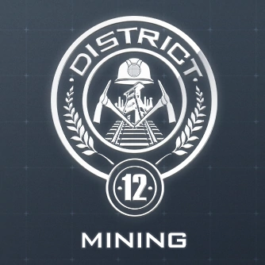 District 12 is the smallest and poorest of the thirteen districts of Panem. It's main industry is coal mining. District 12 consisted of four major areas: the Seam, the merchant section, the Victors' Village, and the Hob.
The general public knew that District 13's industry was graphite mining, and while they did mine the substance on a small scale, their primary industry was nuclear science and technology. It was destroyed by the Capitol during the First Rebellion. 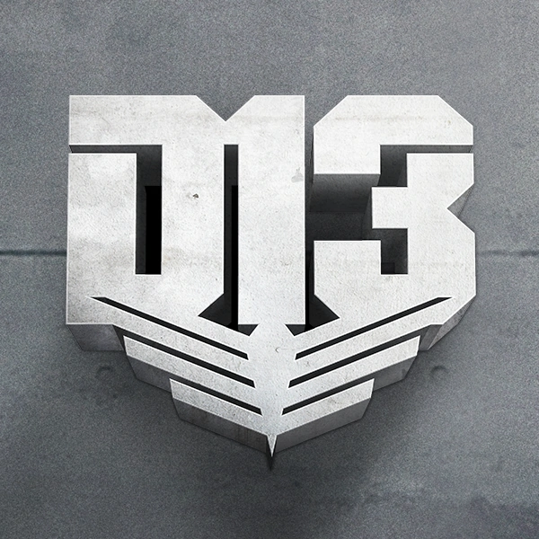